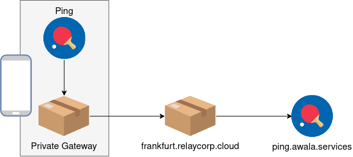
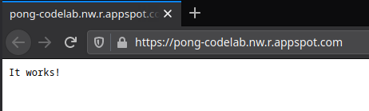
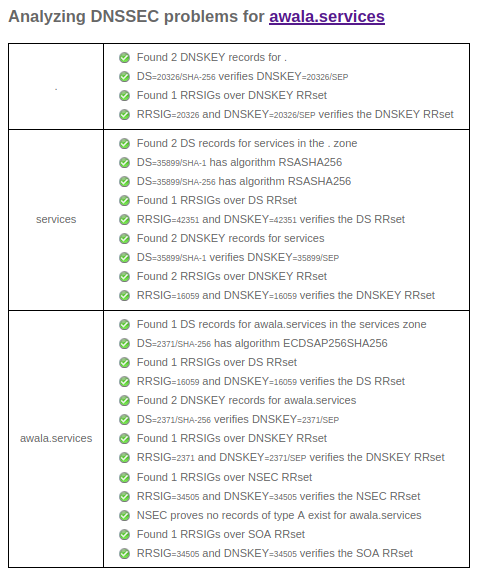
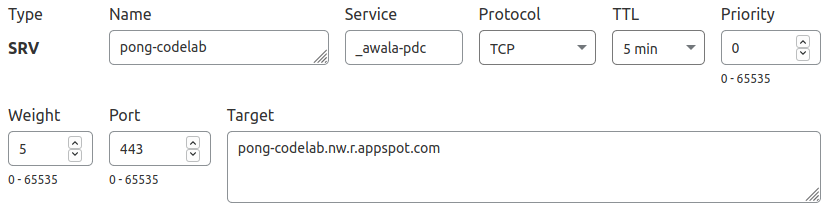

An Awala service is a collection of mobile, desktop, server-side and/or CLI apps that exchange mutually-intelligible messages using endpoints. Server-side apps exposed as Internet hosts will have public endpoints (e.g., your-service.com), whilst all other apps (e.g., mobile, desktop) will have private endpoints.
You're going to work with the Awala Ping service in this codelab. Ping is a trivial service used to test Awala itself by having private endpoints send pings to other endpoints and getting pongs in response. The recipient of the ping can be public or private, but here you'll only use a public endpoint.
What you'll build
You'll build a Fastify-powered HTTP server that will act as a public endpoint in the Ping service, and you'll deploy it to Google App Engine (GAE).
Say your public endpoint address is ping.awala.services and a private endpoint in an Android app sends you a ping, as illustrated in the picture below. When the private endpoint sends the ping, the message will pass through the private gateway on the Android/desktop device, then on to a public gateway (such as frankfurt.relaycorp.cloud), and it'll finally arrive at your public endpoint.

On the other hand, pong messages do the same route in reverse:

Awala requires messages bound for private endpoints to be pre-authorised by the recipient, so each ping message includes an authorisation for the recipient (e.g., ping.awala.services) to reply with a pong message. In most services, authorisations would be issued once and renewed periodically, but public endpoints in the Ping service are meant to be stateless, so private endpoints have to issue an authorisation each time.
Positive : The Ping service uses a request-response pattern because its sole purpose is to test that endpoints can send and receive data. However, endpoints in your own services can send messages at any time and there's no requirement to respond to messages. Your endpoints should just push data to their peers whenever new data is available, without waiting for anyone else to "initiate" the communication.
What you'll need
- A very basic understanding of Node.js, HTTP and DNS.
- Node.js 14+. We'll assume that
npm,npxandnodeare in your$PATH. - A Google Cloud Platform (GCP) account. As of this writing, running this codelab alone won't exceed your free quota.
- A domain name with DNSSEC enabled and the ability to create SRV records. If you don't have one already, register a cheap one with your favourite registrar. Alternatively, if you know of a service offering this for free, use it and please let us know about it.
- The private gateway, otherwise known simply as "Awala" in non-technical documents.
In case you need help
If you have any issues in the course of this codelab, please post a message on our forum and we'll help you out! You can also check out the final version of the app you're going to build.
Set up a new GCP project
- Create a new GCP project and give it any name you'd like.
- Make sure that billing is enabled for the project. Learn how to confirm that billing is enabled.
- Enable the Cloud Build API.
Set up the GCP SDK
Install and initialize the GCP SDK, and then make the new project the default:
gcloud config set project [YOUR_PROJECT_ID]
Negative : It's important not to skip the command above if you're already using GCP. Otherwise, you'll end up modifying one of your existing projects.
Deploy the app template
You're now going to deploy a trivial app to GAE to make sure everything is working so far. You're going to build on this app to implement the public endpoint later.
Start by creating the GAE app for your project in the region of your choosing:
gcloud app create
Next, download the app template, unzip it and change into its directory. On Linux and macOS, you can do this with the following commands:
wget https://codelabs.awala.network/examples/nodejs-pong-template.zip
unzip nodejs-pong-template.zip
cd nodejs-pong-template
Then install the app and build it:
npm install
npm run build
Let's make sure everything has worked so far by starting the server:
npm run start:dev
You should see the message It works! when you open http://localhost:8080.
That's great! So now it's time to deploy the app to GAE, but first quit the server by pressing Ctrl+C (or Cmd+C on macOS), and then run the following:
gcloud app deploy
Test the app!
Run the following command to open the app in your browser:
gcloud app browse
You should see something like this:

You're about to set up the public address of your endpoint, which is specified with an SRV record.
We don't need this DNS record just yet, but DNS propagation can sometimes take a while, so it's best to get it going now.
Make sure your domain has DNSSEC properly configured
Go to dnssec-analyzer.verisignlabs.com and check that your domain has DNSSEC properly configured. If that's the case, you'll see a screen like this:

If any issues are reported, check the documentation of your DNS hosting provider and/or registrar to resolve them.
Negative : For security reasons, Awala gateways will communicate with your public endpoint if and only if DNS answers have valid DNSSEC signatures.
Create the record
Create an SRV record under the domain you wish to use using the following parameters:
- Domain name:
_awala-pdc._tcp.your-domain.comif you wantyour-domain.comto be the public address, or_awala-pdc._tcp.subdomain.your-domain.comif you wantsubdomain.your-domain.comto be the public address. Alternatively, if you have to specify these fields separately, use:- Service:
_awala-pdc. - Protocol:
_tcpor TCP. - Name:
your-domain.comorsubdomain.your-domain.com.
- Service:
- Value:
0 5 443 [YOUR-GAE-APP-DOMAIN]. Alternatively, if you have to specify these fields separately, use: - Priority:
0. - Weight:
5. - Port:
443. - Target: Your GAE app domain (e.g.,
pong-codelab.nw.r.appspot.com).
For example, if you were to map the public address pong-codelab.awala.services to https://pong-codelab.nw.r.appspot.com using Cloudflare as the DNS provider, you'd do the following:

You can use dnschecker.org to monitor the propagation of the new DNS record in a new web browser tab, so that you can continue with the rest of the codelab.
Set the public address in the app
Open app.yaml and add the following:
env_variables:
PUBLIC_ADDRESS: pong-codelab.awala.services
Make sure to set PUBLIC_ADDRESS to the right value in your case.
Awala requires nodes (i.e., gateways and endpoints) to have long-term identity certificates in order for nodes to authenticate and authorise each other. Consequently, each message must be signed by the sender, and the sender's certificate must be attached to the message. Additionally, messages bound for private endpoints must contain a certificate chain that includes the recipient's private gateway certificate.
Whilst this certainly impacts performance, it allows Awala to prevent abuse whilst protecting the privacy of end users in a highly-scalable manner: Nodes can verify that messages are authorised to reach the destination without leaking anything that could identify the human user behind private endpoints – and without having to store any authorisation data.
You're going to use relaydev to generate the identity certificate for your endpoint.
Positive : In addition to high-level libraries and tools like relaydev, we're planning to take things further by completely taking the key management off your plate.
Generate a key pair
First, you need to generate the identity key:
npx @relaycorp/relaydev key gen-rsa > private-key.der
Negative : You're about to deploy this app along with the private key above for expediency, but in production you should absolutely use a secret management tool instead. We recommend Vault and offer an official library that integrates seamlessly in Awala.
Self-issue a certificate
Extract the public key from the key pair above:
npx @relaycorp/relaydev key get-rsa-pub < private-key.der > public-key.der
Then you can self-issue an identity certificate as shown below. Make sure to use an end date in the future.
npx @relaycorp/relaydev cert issue \
--type=endpoint \
--end-date=2022-01-01 \
private-key.der \
< public-key.der > identity-certificate.der
You won't need the public key anymore, so you can delete it now:
rm public-key.der
Serve the certificate
You're going to serve the endpoint certificate so that other endpoints can use it to communicate with it. Awala doesn't currently offer a standard way to distribute such certificates, so you're just going to make it available at /identity.der in this codelab.
To do this, create the file src/routes/identityCert.ts with the following contents:
import { FastifyInstance } from 'fastify';
import fs from 'fs';
import { dirname, join } from 'path'
const ROOT_DIR = dirname(dirname(__dirname));
const CERT_PATH = join(ROOT_DIR, 'identity-certificate.der');
export default async function registerRoutes(
fastify: FastifyInstance,
_options: any,
): Promise<void> {
fastify.route({
method: ['GET'],
url: '/identity.der',
async handler(_req, reply): Promise<void> {
const certificate = await fs.promises.readFile(CERT_PATH);
reply
.type('application/vnd.etsi.tsl.der')
.send(certificate);
},
});
}
Test the new route
Start the server locally (npm start:dev) and check that the new route is working as expected by checking the certificate it outputs. On Linux/macOS you can run the following:
curl -s http://127.0.0.1:8080/identity.der | npx @relaycorp/relaydev cert inspect
You should see an output like this:
Common Name: 0224281a7b5bcf0aa0db4b48baf43b6f03905bc884fd9483ee6445a900f255fea
Private address: 0224281a7b5bcf0aa0db4b48baf43b6f03905bc884fd9483ee6445a900f255fea
Certificate is valid
Use `openssl` to get the full details:
openssl x509 -noout -text -inform DER -in /path/to/cert.der
You've now completed the groundwork, so it's time to start receiving pings!
Pings are JSON-serialised messages that contain a unique identifier and a Parcel Delivery Authorisation (PDA). The PDA is a certificate that authorises your endpoint to send a pong message to the private endpoint that sent the ping. The structure of ping messages is illustrated below:
{
"id": "<The ping id>",
"pda": "<The PDA for the recipient (base64-encoded)>",
"pda_chain": [
"<PDA Chain, Certificate #1 (base64-encoded)>",
"..."
]
}
Using Awala's nomenclature, each ping is a service message – as is each pong. Each message is made of a type (like application/vnd.awala.ping-v1.ping) and its content (like the JSON document above). The content is binary so that you can transmit textual and binary data.
A service message isn't transmitted as is: Instead, it's encrypted and put inside a parcel, which contains just enough information for gateways to route it and ensure that only pre-authorised messages are delivered. Your app will be responsible for (un)sealing parcels using a high-level library.
Deserialise service messages
Let's implement the code to extract the service message from incoming parcels and make sure that the contents are valid ping messages.
First, install the Awala Node.js library:
npm install @relaycorp/relaynet-core
You're going to need to convert Buffer values to ArrayBuffer a few times, so now create a utility to do just that. Create the file src/utils.ts with the following contents:
export function bufferToArrayBuffer(buffer: Buffer): ArrayBuffer {
return buffer.buffer
.slice(buffer.byteOffset, buffer.byteOffset + buffer.byteLength);
}
At this point you're ready to process incoming parcels, so you're going to implement a function that returns the encapsulated ping message after doing the following:
- Decrypt the service message contained in a parcel using the private key you generated earlier.
- Verify that the service message is syntactically valid and its
typeis that of a ping (i.e.,application/vnd.awala.ping-v1.ping). - Parse the
contentof the service message and check it's a valid ping.
To achieve this, create the file src/messaging.ts with the following contents:
import { Certificate, Parcel } from "@relaycorp/relaynet-core";
import { bufferToArrayBuffer } from "./utils";
export interface Ping {
id: string;
pda: Certificate;
pdaChain: Certificate[];
}
export async function extractPingFromParcel(parcel: Parcel, privateKey: CryptoKey): Promise<Ping> {
const { payload: serviceMessage } = await parcel.unwrapPayload(privateKey);
if (serviceMessage.type !== 'application/vnd.awala.ping-v1.ping') {
throw new Error(`Invalid service message type: ${serviceMessage.type}`);
}
return deserializePing(serviceMessage.content);
}
function deserializePing(pingSerialized: Buffer): Ping {
const pingJson = JSON.parse(pingSerialized.toString());
if (typeof pingJson.id !== 'string') {
throw new Error('Ping id is missing or it is not a string');
}
let pda: Certificate;
try {
pda = deserializeCertificate(pingJson.pda);
} catch (err) {
throw new Error(`Invalid PDA: ${err.message}`);
}
if (!Array.isArray(pingJson.pda_chain)) {
throw new Error('PDA chain is not an array');
}
let pdaChain: Certificate[];
try {
pdaChain = pingJson.pda_chain.map(deserializeCertificate);
} catch (err) {
throw new Error(`PDA chain contains invalid item: ${err.message}`);
}
return { id: pingJson.id, pda, pdaChain };
}
function deserializeCertificate(certificateDerBase64: any): Certificate {
if (typeof certificateDerBase64 !== 'string') {
throw new Error('Certificate is missing');
}
const certificateDer = Buffer.from(certificateDerBase64, 'base64');
if (certificateDer.byteLength === 0) {
throw new Error('Certificate is not base64-encoded');
}
try {
return Certificate.deserialize(bufferToArrayBuffer(certificateDer));
} catch (error) {
throw new Error('Certificate is base64-encoded but not DER-encoded');
}
}
Positive : Heads up: To improve security, Awala will support encryption with a different set of keys, instead of using identity keys (which should ideally only be used for authentication and authorisation). The ability to encrypt with identity keys will be dropped before Awala reaches General Availability.
Create a Fastify route
Gateways and public endpoints exchange parcels using Awala PoHTTP, which is a simple WebHook-based protocol. You might want to refer to the PoHTTP spec when you're eventually building the production version of a public endpoint, but for now that won't be necessary.
PoHTTP requires your server to receive parcels POSTed at /, so you're now going to create a Fastify route for POST /. This route will be responsible for the following:
- Validate the request, and abort with the appropriate
4XXresponse if the request is invalid. - Return a
50Xresponse if there's an unexpected error at any point. That will instruct the gateway to try again later. - Return a
202 Acceptedresponse if the request is valid, regardless of whether the encapsulated service message was valid.
To implement the above, create the file src/routes/pohttp.ts with the following contents:
import { derDeserializeRSAPrivateKey, Parcel } from "@relaycorp/relaynet-core";
import { FastifyInstance } from "fastify";
import * as process from "process";
import fs from 'fs';
import { dirname, join } from 'path';
import { extractPingFromParcel, Ping } from "../messaging";
import { bufferToArrayBuffer } from "../utils";
const ROOT_DIR = dirname(dirname(__dirname));
const PRIVATE_KEY_PATH = join(ROOT_DIR, 'private-key.der');
export default async function registerRoutes(
fastify: FastifyInstance,
_options: any,
): Promise<void> {
const privateKeySerialized = await fs.promises.readFile(PRIVATE_KEY_PATH);
const privateKey = await derDeserializeRSAPrivateKey(privateKeySerialized);
// Enable the request content type "application/vnd.awala.parcel"
fastify.addContentTypeParser(
'application/vnd.awala.parcel',
{ parseAs: 'buffer' },
async (_req: any, buffer: Buffer) => {
return bufferToArrayBuffer(buffer);
},
);
fastify.route<{ readonly Body: Buffer }>({
method: ['POST'],
url: '/',
async handler(request, reply): Promise<void> {
// Validate the request
if (request.headers['content-type'] !== 'application/vnd.awala.parcel') {
return reply.code(415).send({ message: 'Invalid Content-Type' });
}
const gatewayAddress = request.headers['x-awala-gateway'] || '';
if (gatewayAddress.length === 0) {
return reply
.code(400)
.send({ message: 'X-Awala-Gateway header is missing' });
}
// Validate the parcel
let parcel;
try {
parcel = await Parcel.deserialize(request.body);
await parcel.validate();
} catch (err) {
request.log.info({ err }, 'Refusing malformed or invalid parcel');
return reply.code(403).send({ message: 'Parcel is malformed or invalid' });
}
if (parcel.recipientAddress !== `https://${process.env.PUBLIC_ADDRESS}`) {
request.log.info(
{ recipient: parcel.recipientAddress },
'Refusing parcel bound for another endpoint'
);
return reply.code(403).send({ message: 'Invalid parcel recipient' });
}
// Get the ping message
let ping: Ping;
try {
ping = await extractPingFromParcel(parcel, privateKey);
} catch (err) {
request.log.info(
{ err },
'Ignoring invalid/malformed service message or ping'
);
// Don't return a 40X because the gateway did nothing wrong
return reply.code(202).send({});
}
return reply.code(202).send({});
},
});
}
Negative : Unlike private endpoints, public endpoints are not protected against replay attacks, so a malicious gateway could send the same parcel multiple times. This would be a problem in most cases, but you can avoid it by storing the parcel.id and the private address of the sender (parcel.senderCertificate.calculateSubjectPrivateAddress()), and refusing any future parcels matching those. You only need to keep that data around until parcel.expiryDate.
Test the new route
Make sure that the new route is working fine by starting the server locally (npm start:dev) and making a POST request to it. For example, on Linux/macOS, you can run:
curl -X POST \
-H 'X-Awala-Gateway: foo.bar' \
-H 'Content-Type: application/vnd.awala.parcel' \
http://127.0.0.1:8080
Which should return the following:
{"message":"Parcel is malformed or invalid"}
It's time to send pong messages back, now that you're able to receive pings.
Create parcels for pong messages
Serialising pong messages is really simple, as the message content is just a string representing their respective ping id. It doesn't use JSON.
Once the pong service message is serialised, the next step is to put it inside a parcel by:
- Putting the encrypted service message in the parcel.
- Attaching the PDA and its chain to the parcel.
- Signing the parcel with the public endpoint's identity key.
To do this, go back to src/messaging.ts and add the following function:
export async function createPongParcel(
ping: Ping,
pingSenderCertificate: Certificate,
privateKey: CryptoKey,
): Promise<Buffer> {
const pongMessage = new ServiceMessage(
'application/vnd.awala.ping-v1.pong',
Buffer.from(ping.id),
);
const pongParcelPayload = await SessionlessEnvelopedData.encrypt(
pongMessage.serialize(),
pingSenderCertificate,
);
const pongParcel = new Parcel(
await pingSenderCertificate.calculateSubjectPrivateAddress(),
ping.pda,
Buffer.from(pongParcelPayload.serialize()),
{ senderCaCertificateChain: ping.pdaChain },
);
return Buffer.from(await pongParcel.serialize(privateKey));
}
Make sure to add the missing imports from @relaycorp/relaynet-core.
Send parcels to the public gateway
For expediency, you're going to send the parcel containing the pong message within the same process, before returning the HTTP response. However, you should consider using a background queue in production, such as one backed by Redis or GCP PubSub.
First, you should install the PoHTTP client so that you can send parcels to public gateways:
npm install @relaycorp/relaynet-pohttp
Then open src/routes/pohttp.ts and add the following before the last return statement in the route:
// Send the pong message
const pongParcel =
await createPongParcel(ping, parcel.senderCertificate, privateKey);
try {
await deliverParcel(gatewayAddress as string, pongParcel);
} catch (err) {
request.log.error({ err, gatewayAddress }, 'Failed to send pong');
return reply.code(500).send({ message: 'Internal server error' });
}
Finally, import the createPongParcel() function at the top of the file.
Deploy the latest changes to GAE
Make sure that nothing is broken by starting the server locally (npm start:dev) and making a POST request to http://127.0.0.1:8080. For example, on Linux/macOS, you can run:
curl -X POST \
-H 'X-Awala-Gateway: foo.bar' \
-H 'Content-Type: application/vnd.awala.parcel' \
http://127.0.0.1:8080
If you're still getting Parcel is malformed or invalid, that's good, so deploy the latest changes by running the following command:
gcloud app deploy
For good measure, make the same POST request, but this time to the appspot.com URL. You should get the exact same response.
It's finally time to test your public endpoint, and you'll use awala-ping for that.
Install awala-ping
To install the app, simply run:
npm install -g @relaycorp/awala-ping
Make sure that it's working properly by pinging ping.awala.services, so start the private gateway (if it isn't running already) and run the following:
awala-ping ping
You'll see a message saying that a ping message was sent and another saying that the pong message was received.
Import your endpoint
You need to import your endpoint with awala-ping so that you can use it. The public endpoint ping.awala.services works straightaway because it's imported automatically the first time you use awala-ping.
To import your public endpoint, you should call awala-ping third-party-endpoints import-public with your endpoint's identity certificate and its public address. For example:
awala-ping third-party-endpoints import-public \
pong-codelab.awala.services \
< identity-certificate.der
Test it!
You're now ready to call awala-ping ping with your public endpoint! For example:
awala-ping ping pong-codelab.awala.services
If you're not getting a message saying that a ping was sent, make sure that the private gateway is indeed running.
If pings are sent, but you never get pongs, try the following:
- Make sure that your GAE app is getting pings and sending pongs by checking its logs. If it's failing to process pings or send pongs, you'll find the reason in those logs.
- If your GAE app isn't even getting pings, check that the SRV record you created earlier is working by going to dnschecker.org (replace
ping.awala.serviceswith the public address of your endpoint). If it doesn't look right, check with your DNS hosting provider and/or registrar. - If the above looks good but you're still not getting pongs, let us know.
Well done! You've just built an Android app for a centralised Awala service.
Delete the GCP project
When you're done testing the public endpoint you created, do the following to delete the resources you created:
Negative : If you created additional GCP resources in this project, those will be deleted too.
- Go to the GCP resource manager.
- In the project list, select the project that you want to delete, and then click Delete.
- In the dialog, type the project ID, and then click Shut down to delete the project.
What's next?
- Learn more about the architecture of Awala services.
- Read the documentation for the Awala Node.js library.
- Join the Awala community and give us some feedback on the codelab.
- Spread the word on Twitter!